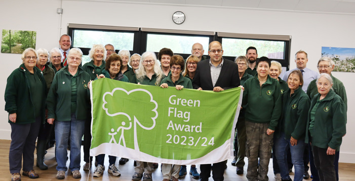

Friends of Rushcliffe Country Park
Friends of Rushcliffe Country Park - volunteer group
A huge amount of the work on the park is done with the help of our ‘Friends’ group. You can follow them on Facebook to keep up to date with park news and events. You will see many of the projects they work on as you walk around the park.
The photo (below) shows the Group with the 2023/24 Green Flag Award.
If you join the group you will be able to:
- Help create and maintain habitats and conservation work
- Learn or share your knowledge about wildlife and nature
- Help improve the park and its facilities.
Why not join the Friends of Rushcliffe Country Park? Contact the Country Park Rangers on 0115 921 5865.
